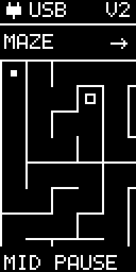

Tilt Maze
Roll to the goal
Press MID START, hold EggBert screen-up in a comfortable nearly flat position, and keep it still during CENTERING. This measures a temporary neutral posture for the game.
Tilt to accelerate the filled ball. Return toward neutral to slow it down. Reach the hollow square to finish. Walls block the ball; it can slide along them.
The 12-by-18-cell maze is larger than the screen. The view stays still until the ball enters a margin near an edge, then scrolls as the ball pushes farther. At the maze boundary the view stops scrolling.
The arrow beside MAZE points directly toward the goal. It does not show the correct route or reveal the maze. Expect winding corridors, branches and dead ends. All cells are connected, so every generated maze has a solution.

Pause and controls
While playing, press MID PAUSE. Move with top/bottom and select with middle:
- RESUME: continue from the same position; velocity starts at zero.
- RESTART: reset the ball and timer in the same maze, then center again.
- NEW MAZE: replace the layout with a newly randomized maze.
- RECENTER: hold still to change neutral without resetting the position or timer.
- EXIT: return to MAZE on HOME.
Pause and centering do not count toward the play timer. DN CANCEL leaves centering. DN EXIT leaves the ready, win or error screen. After winning, MID NEW generates another maze. If sensor readings stop, the game is held until retry or exit.
Both EggBert versions
The game uses normal low-g acceleration on V1 and V2. It does not record an experiment, write flash, change saved calibration, or erase a protected capture. Keep power on until any wanted recording has been downloaded.